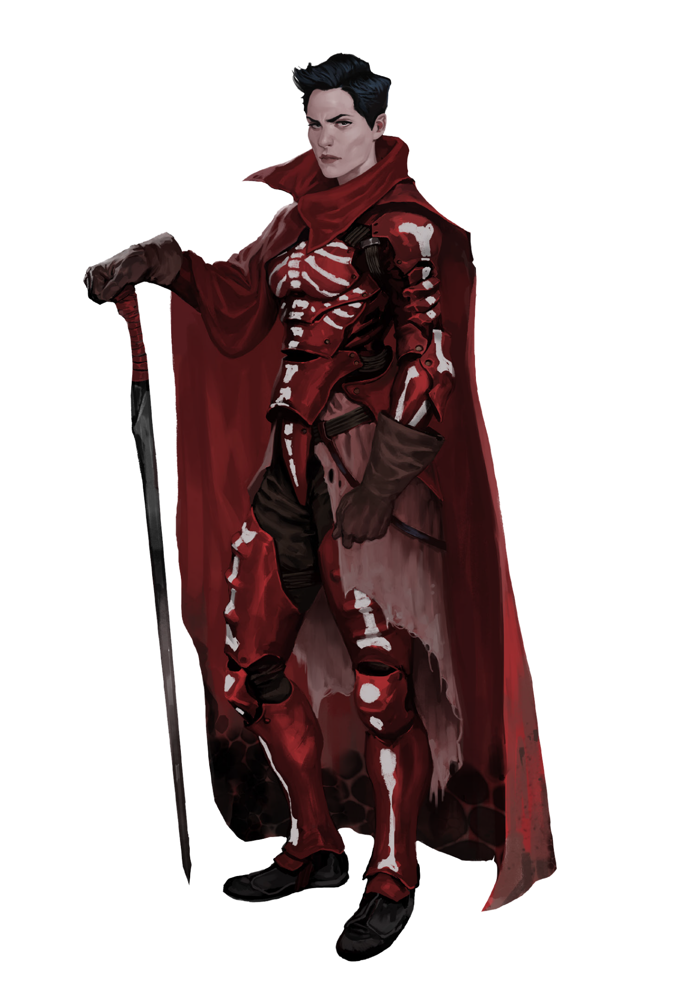

CLAN DOSSIER
Sanglier
They combined regal bearing with purity and discipline.
Clans of the Rhône pp. 9–11

SUBDERMAL
Briefing
The red dome: White ivy curls up the pillars of the sanctuary of Montpellier. Within, an ancient Ventricule sits with eyes closed.
A young couple kneels in front of her, ready to enter into the eternal bond and enhance the bloodlines of Franka. The Ventricule opens her opaque eyes, looks to the left, to the right, then down at herself. The crowd hums with excitement. Then, the quick blade slashes the wrinkled palm of her hand. Sticky blood oozes forth, and the couple starts sucking at the wound. The old woman grins down at them, and the ceremony is over. This womb will soon give birth to a new generation of Sanglier, and the Ventricule knows that only a strong trunk can bear good fruit.
Subdermal
The old Franka was weak, decadent and had no king. A withered family tree with crippled branches birthing only afflicted and dimwitted children. The Sanglier however cultivated the blood of the ancients, cleaning away the dross and strengthening it through marriage. The blood of the Sanglier was pure like the blue blood of the kings of the past, unique, beyond blemish. Behind the walls of Montpellier, a new generation of Frankans was bred. One day, the true king of the New World shall be born from their ranks. With his scepter, he will divide the afflicted from the strong and the dimwitted from the wise.
When the Spitalians encountered the Sanglier, they had already mastered written language and arithmetics. When the Neolibyans opened up their first trading post in Montpellier, the Vertebre acted as counselors and local experts from the beginning. Quickly, the Clan stood out due to its intelligence and its fanatical attitude: an exceptional ally for trade as well as for recruiting frontline soldiers. Greedily, they sucked up anything both Cults had to offer. They combined regal bearing with purity and discipline.
Lines of Succession
Cerveau and Neurone lead the Clan. They hold court in the Hall of the Sanglier, always one man and one woman who have proven to be of exceptional value to the Clan. Their blood and their wisdom are unparalleled, their judgment can extinguish whole families from the bloodline or mobilize the Clan’s soldiers for war. The Cerveau deals with the internal management of the Sanglier, managing the bloodlines and relationships of her people, while the Neurone directs the Clan’s external responses and commands the Sanglier legion. Together, they alone decide the fate of the Sanglier. It has been thus for two centuries now.
However, the stories of the glorious fight of the Resistance have reached Montpellier now as well, especially the ears of the young members of the Clan. More and more of them follow the call of self-determination and head for Toulouse. That is a disaster – a whole generation with exceptional aptitudes threatens to be lost. The Cerveau knows that it is time for a change.
Flesh and Bones
At the core of the Sanglier, there are 17 houses descended from the original families. Their bloodline is old and strong, and only the best of the best are selected from the common folk of Montpellier to join their ranks. The Cerveau picks and chooses delegates and officiaries from these bloodlines, implanting them throughout the government of Montpellier as civil servants, administrators, and ambassadors. In this way she ensures that no matter how closely intertwined the Clan becomes with the Cults, the backbone of the city remains pure.
The Sanglier legion is the Clan’s flesh, and a proving ground for those that have no ties to the 17 houses, or bastards who have no true claim to their family name. The legionnaires leave the walls of Montpellier to battle side by side with Preservists and Chagas against the Primer, deep in Franka’s swamps. They are an elite force, and the sight of their bright red cloaks will strike terror into anyone with enough of their mind left to know fear.
Amongst Jackals
Anubians have come to Montpellier. Led by the Hogon Osei and sanctioned by the Consul Atuma they set down their roots in a disused area of the city, a portion which the African healers slowly begin to develop into a home away from home. While the official delegation sightsees in the halls of the bastion, cooperating with Narida Woznan and her Spitalians, a lone Hecatean tries to make contact with the Sanglier. He says their blood called out to him. This is why he has made the arduous journey across the Mediterranean.
THE CLAN
Hierarchy & Ranks
Select any rank to read its prerequisites, effect, and equipment.
THE CLAN